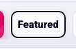

Category bar
The shelf's sections as a run of options, one current, and the two acts on the shelf, Search and Filters with its count. One row at every width, because it sticks: the run scrolls and fades where more waits. Everything on this page is drawn by design/system/components/category-bar.css through index.css, the same file a screen will load.
Anatomy
| Part | Class or element | What to change there |
|---|---|---|
| The bar (the molecule's own) | nav.catbar | the plate (--bg-plate), its violet edge (--line-plate-edge), the corner, the padding by width: 8px, 12px from 600px, 12px 16px from 1200px |
| The label (the molecule's own) | .catbar__l | "Categories" in small capitals; drawn from 1200px only |
| The run (the molecule's own) | .catbar__run, .is-more | the row that scrolls without a scrollbar; .is-more, set by the script, fades its end where more sections wait |
| An option | .seg__opt as a link, Segmented control | the chosen look is the atom's (aria-current="true"); the bar only keeps it from shrinking, wrapping or underlining |
| The acts | .catbar__acts > Button --ghost --m --tap | the group's place at the bar's end; each act is the Button's ghost M at the 44px press with an Icon and its word; the bar sizes the glyph and folds the word under 1200px |
| The count | Badge .badge--count .button__pin | how many filters are in force, pinned to the Filters tile; hidden while there are none |
| Sticky | .catbar--sticky | stays under the header strip while the shelves scroll, on the page's ground so nothing shows through |
Variants and sizes
One form, so there is no variant to pick. Two things change with the situation, and each carries its rule. Heights and widths are read from the render.
- The run = the sections that exist. A section a filter emptied takes its chip, and with no section left the run and its label go (D-58). More chips than room: the run scrolls and
.is-morefades its end. The script sets it; here it is set by hand, as the product's script does. - The acts fold by width. From 1200px Search and Filters show the glyph and the word; under 1200px the glyph alone in a 44 x 44 square, the word kept for a screen reader. This is the screens' look; rename map row 11 would have made them icon tiles at every width, and that is put to the founder (round 2, Q2).
- Width = the layout. The bar is as wide as its column; its content never sets it.
A run that scrolls
Sizes, read from the render
| Part | Measured | Rule |
|---|---|---|
| The bar | one row; the option's 44px and the bar's padding set it | |
| An option | the Segmented control's M, 44px | |
| An act | the Button's tile; see the finding in the code section |
When to use
A shelf that holds several sections on one page and needs a way to jump between them and two acts that act on the whole shelf: the catalogue. The bar is a jump list, not a filter: the section in view is the current chip and the bar never filters (catalogue.js). It sticks, so it must stay one row at every width: stacked, the open bar took 124px of a 640px window, and the baseline keeps the two acts and lets the chips give way (research/docs/baseline.md 10.2). Its job is the main flow's second step, choose what to open: every case with its chance and value is a section away.
Rule and anti-rule
Use it
The catalogue: Daily, Featured, Community and Classic as the run, Search and Filters at the end, one row, stuck under the header.
Take another component
Choosing one value that stays on the page (the count of rounds, an amount, the sort) is a Segmented control alone. Panels that swap on one page are Tabs. A path to this page is a Breadcrumb. A section's own heading is a Section head; the bar jumps to it.
States
No states of its own. The plate is not interactive. What can be pointed at is its atoms: an option is the Segmented control's (hover, active, focus-visible), an act is the Button's (ghost hover, press, focus-visible). The bar never draws a hover or a press instead of theirs. The one thing it adds is where the ring of an option stands, because the run scrolls and a scroller cuts an outer ring: the ring is drawn inside the option. Live at rest, press Tab to reach it.
Snapshot of the option's ring in the run, dark on the left and light on the right, taken with reduced motion.

--line-focus, offset inward by --size-edge and the hairlinenode design/kit/tools/shoot-states.js http://localhost:8765/ category-bar # re-shoot after a change to category-bar.css or its tokens node design/kit/tools/shoot-states.js http://localhost:8765/ category-bar --check # step 9: fails if a snapshot drifted
In the code
| Token | Kind | Dark | Light |
|---|
Read live from tokens.css. Geometry (--space-*, --radius-m, --size-header) and type come straight from the primitives. No colour primitive is read and no component token is made. The fade of the run is a mask: it reads the alpha of its opaque stop, black, which is no colour of the product.
The acts, rename map rows 11 and 12. The two acts are the ghost Button M at the 44px press, .button--tap, as the catalogue wears them: the glyph and its word from 1200px, the glyph alone in a 44 x 44 square under 1200px with the word kept for a screen reader. Folding the word and sizing the glyph is the bar's own placing of what it holds, so those two rules stay in this file; the Button's own fold, .button--fold, folds under 600px and is not this. Row 11 as written, the icon tile, would have dropped the words and the pink edge from 1200px: it is put to the founder on the hub (round 2, Q2), and the bar keeps the screen's look until then. The option's chosen look is the atom's and draws the very values the bar drew (row 12); its hover and press are the Segmented control's (D-264, Q2).
File: design/system/components/category-bar.css, loaded by design/system/index.css in the molecules' group.
<nav class="catbar catbar--sticky" aria-label="Categories">
<span class="catbar__l">Categories</span>
<div class="catbar__run"><a class="seg__opt" href="#cat-daily" aria-current="true">Daily</a> ... </div>
<div class="catbar__acts">
<button class="button button--ghost button--m button--tap" type="button" aria-label="Search cases by name"><i class="icon icon--search" aria-hidden="true"></i><span class="button__label">Search</span></button>
<button class="button button--ghost button--m button--tap" type="button"><i class="icon icon--filter" aria-hidden="true"></i><span class="button__label">Filters</span><span class="badge badge--count button__pin" hidden></span></button>
</div>
</nav>
Stands on: the catalogue. Until step 8 that screen still reads kit.css; step 6 moves its markup onto this file and the Button's tile.